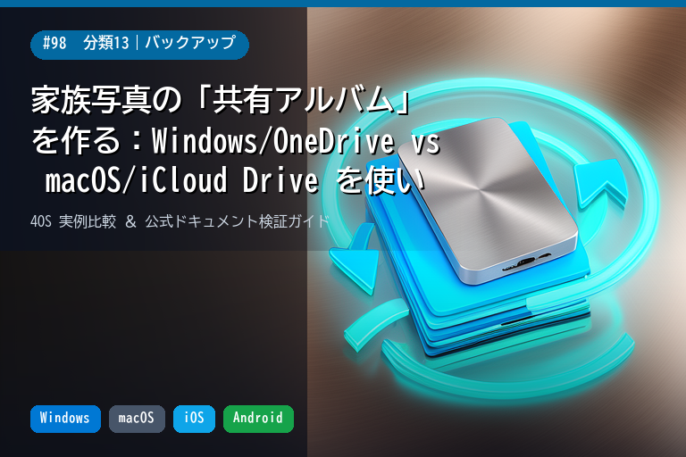

#98｜分類13: ファイル管理・バックアップ・データ復旧 2026-11-28

家族写真の「共有アルバム」を作る：Windows/OneDrive vs macOS/iCloud Drive を使い分けて、iPhone と Windows PC でも瞬時に同期する方法｜Windows・macOS・iOS・Android
「家族で撮った写真をみんなで見られるようにしたいけれど、iPhoneとWindows PC、中にはAndroidを使っている人もいて、どう管理すればいいのかわからない……」
そんな悩みをお持ちではありませんか？ 家族の思い出を共有する際、最も重要なのは「誰がどのデバイスを使っていても、同じ最新のアルバムにアクセスできること」であり、同時に「大切なデータが消えないためのバックアップ体制」を整えることです。
この記事では、Windows、macOS、iOS、Androidの4つのOSを横断して、OneDriveとiCloud Driveを賢く使い分けながら、家族全員で快適に写真を共有・管理するための実践的な手順を解説します。この記事を読み終える頃には、あなたの家族に最適な「ハイブリッドなバックアップ戦略」の道筋が見えているはずです。
4OS比較早見表
| 機能・項目 | Windows 11 (OneDrive) | macOS (iCloud Drive) | iOS (iPhone/iPad) | Android |
|---|---|---|---|---|
| 主なクラウド | OneDrive | iCloud Drive | iCloud フォト | Google フォト |
| PCとの同期 | 標準アプリで高度に同期 | Finderとシームレスに統合 | Safari/ファイルアプリ経由 | ブラウザ/Googleドライブ連携 |
| バックアップ | ファイル履歴 / 外付けHDD | Time Machine (標準) | iCloud バックアップ | Googleアカウント自動同期 |
| 外部ストレージ | HDD/SSDの直接操作可 | HDD/SSDの直接操作可 | 標準機能でのHDD接続不可 | SDカード対応（機種依存） |
| 家族共有 | リンク共有 / 特定ユーザー | 共有フォルダ / iCloud共有 | AirDrop(Apple間) / iCloud | Quick Share / Googleフォト |
1. Windows 11 での実例手順
Windows環境では、Microsoftのクラウドストレージ「OneDrive」をハブとして活用するのが最もスムーズです。
OneDrive で「家族アルバム」を構築・同期させる
【準備】 Microsoftアカウント（Outlook/Hotmail等）を用意し、Windows 11とiPhoneの両方でログインします。
PC側操作 (Windows 11):
1. 「スタートメニュー」→「設定」→「アカウント」からOneDriveの同期状態を確認します。
2. エクスプローラーを開き、OneDriveフォルダ内に「家族アルバム」という名前のフォルダを作成します。
3. その中に写真をドラッグ＆ドロップで追加します。
4. フォルダを右クリックし、「共有」を選択。「特定の人のリンクを作成」を選び、家族のメールアドレス宛てに送信します。
iPhone側操作 (iOS):
1. App Storeから「OneDrive」アプリをインストール・起動します。
2. PCで共有したリンクまたはQRコードを開き、アプリ内で該当フォルダへアクセスします。
3. iPhoneで撮影した写真をこのフォルダ内にアップロードすれば、PC側にも瞬時に反映されます。
Windows 11 の標準機能によるバックアップと復旧
Windowsの「設定」アプリ内には、OSそのものを丸ごと保存する「ワンクリックでのイメージバックアップ」ボタンは標準搭載されていません（OneDriveはファイル同期のみです）。
【推奨】 システム全体の保護が必要な場合は、外付けHDDへの手動コピーや、サードパーティ製のバックアップソフトを併用するのが公式の代替案として一般的です。
よくあるトラブルと解決法（Win）
- トラブルA：共有リンクが有効期限切れになった
- 原因：作成した共有リンクに有効期限を設定していたため。
- 解決：OneDriveウィンドウの「共有」タブから再度リンクをコピーし、再発行します。
- トラブルB：OneDriveの同期アイコンが黄色い！
- 原因：通信環境の問題または一時的なエラー。
- 解決：タスクバーのアイコンをクリックし、「今すぐ同期」を選択するか、PCを再起動してください。
- トラブルC：iPhoneからPCの共有フォルダに直接アクセスできない
- 原因：Windowsのファイアウォール制限やネットワークプロトコルの不一致。
- 解決：両端末を同じWi-Fiに接続し、ブラウザではなく「OneDriveアプリ」経由で操作してください。
2. macOS での実例手順
Macユーザーであれば、iCloud Driveとの親和性を最大限に活かすのが正解です。
iCloud Drive で「家族アルバム」を構築・同期させる
【準備】 Apple IDでMacとiPhoneの両方にログインします。
Mac側操作 (macOS):
1. 「Finder」を開き、サイドバーの「iCloudドライブ」を選択。
2. 新しいフォルダを作成し、「共有」ボタンをクリックして家族を招待します。
3. ファイルを追加すると、自動的にクラウドへ同期されます。
iPhone側操作 (iOS):
1. iPhoneの「フォト」アプリで撮影した写真は、設定により自動で「iCloudフォト」へアップロードされます。
2. Macで共有されたフォルダへのアクセスは、「ファイル」アプリを開くか、Safariから icloud.com にログインして行います。
macOS の標準機能によるバックアップと復旧
Time Machineの活用:
1. 「システム設定」→「一般」→「Time Machine」へ進みます。
2. 外付けHDDを接続し、自動バックアップを設定します。
3. 復元方法: Time Machine起動画面で過去の日付を選択し、リストから必要なファイルを選んで「復元」を押すだけです。
よくあるトラブルと解決法（Mac）
- トラブルA：iCloudドライブの同期が止まっている
- 原因：ネットワーク切断やiCloud設定のオフ。
- 解決：「システム設定」→「Apple ID」→「iCloud」で「iCloudドライブ」を再有効化します。
- トラブルB：Time Machineが外付けHDDに保存できない
- 原因：ディスクのフォーマット（exFATなど）が非対応。
- 解決：Time MachineはmacOS標準のファイルシステム（APFS/HFS+）を必要とします。ドライブの初期化を確認してください。
- トラブルC：iPhoneから直接PCに写真を転送したいが、ケーブル接続ができない
- 原因：iOSのセキュリティ強化により、標準機能での自由なコピーが制限されているため。
- 解決：「AirDrop」を使い、またはiCloudフォトを経由して同期させるのが公式の推奨ルートです。
3. iOS (iPhone/iPad) での実例手順
iPhoneは「撮影・共有の起点」となりますが、ファイル管理にはいくつかの制約があります。
iOS の標準機能によるデータ管理の限界と代替策
- 外部ストレージへのアクセス: iPhoneに外付けHDDを接続して直接写真を読み取ることは、Appleの公式仕様として非対応です。
- 共有の代替手段: 「AirDrop」（Mac/iPhone間のみ）、iCloudフォト、またはOneDrive/Googleドライブアプリへのアップロードが唯一の公式ルートとなります。
よくあるトラブルと解決法（iOS）
- トラブルA：AirDropでWindows PCに写真を送れない
- 原因：AirDropはAppleデバイス専用プロトコルであるため。
- 解決：iPhoneの「フォト」アプリで共有ボタン→リンク発行を行い、PCのブラウザから取得してください。
- トラブルB：iCloudフォトの容量不足エラー
- 原因：ストレージが満杯。
- 解決：設定の「ストレージ管理」から不要なファイルを削除するか、有料プランへのアップグレードを検討してください。
- トラブルC：写真アプリでアルバムを編集できない
- 原因：同期が完了していない。
- 解決：設定→「iCloud」→「フォト」で「最適化されたサイズを表示」を選択し、通信環境の良い場所で再同期させてください。
4. Android での実例手順
AndroidはGoogleエコシステムとの親和性が高く、自由度の高いファイル操作が可能です。
Android の標準機能によるデータ管理と共有
- Google フォト: 「フォト」アプリで撮影した写真は自動的にクラウドへアップロードされます。PCからはブラウザの
photos.google.comでアクセス可能です。 - ファイル転送: USBケーブルでPCに接続し、Windowsのエクスプローラーから「My Phone」として認識させれば、ドラッグ＆ドロップで高速転送が可能です。
Android のバックアップと復元の注意点
- Googleアカウント連携: 「設定」→「アカウント」でGoogleアカウントを追加し、自動同期を有効にします（機種依存なし）。
- 外付けストレージの扱い: SDカードへの保存は標準サポートされていますが、HDD/SSDの直接接続管理はPC側での操作が必要になることが一般的です。
よくあるトラブルと解決法（Android）
- トラブルA：Googleフォトのバックアップが止まっている
- 原因：データ通信制限または容量不足。
- 解決：Wi-Fiに接続し、設定で「Wi-Fiのみ」をオフにしてデータ通信を許可するか、ストレージを拡張してください。
- トラブルB：PCへのケーブル転送が認識されない
- 原因：USB接続モードが「充電のみ」になっている。
- 解決：スマホの通知パネルから「USBの設定」を開き、「ファイル転送」を選択してください。
よくあるトラブルと解決チェックリスト
| エラー・事象 | 原因の可能性 | 解決策（チェック項目） |
|---|---|---|
| 同期が止まる | 通信環境、またはクラウド容量不足 | [ ] Wi-Fi接続を確認したか？ [ ] クラウドの空き容量は十分か？ |
| ファイルが開けない | 権限設定、またはリンク切れ | [ ] 共有リンクの有効期限を再確認したか？ [ ] 特定ユーザーへのアクセス許可を与えたか？ |
| デバイスが認識されない | ケーブル不良、または接続モード | [ ] 正しいデータ転送用ケーブルを使用しているか？ [ ] スマホ側で「ファイル転送」を選択したか？ |
まとめ：快適なマルチOS環境を作るポイント
家族の思い出を安全に守るためには、「クラウドでの共有」と「物理的なバックアップ」の両輪が必要です。
- クラウドの使い分け: WindowsユーザーはOneDrive、Mac/iPhoneユーザーはiCloudをベースにしつつ、Androidユーザーを含む場合はGoogleフォトやOneDriveを共通のハブとして使うのが最も効率的です。
- 物理バックアップの重要性: クラウドは便利ですが、万が一のアカウントロックや紛失に備え、定期的に外付けHDD/SSDへデータをコピーする習慣をつけましょう。
- ツール選びのコツ:
- 外付けストレージ: 高速な転送が必要なら「外付けSSD」、大容量保存なら「外付けHDD」を選びましょう。
- バックアップソフト: Time MachineやOneDriveのファイル履歴に加え、より高度な復旧を求めるなら専用のデータ復旧ソフトやクラウドバックアップサービス（Backblaze等）の導入も検討の価値があります。
正しいツールと手順を知ることで、デバイスの壁を越えた「家族だけの快適なアルバム」を構築しましょう。
参考文献・公式ドキュメント（一次情報ソース）
本記事の手順・仕様は以下の各OSおよびツールの公式ドキュメントに基づいています。OSアップデートによりメニュー名称や挙動が変わる場合があるため、最新仕様の確認にもご活用ください。